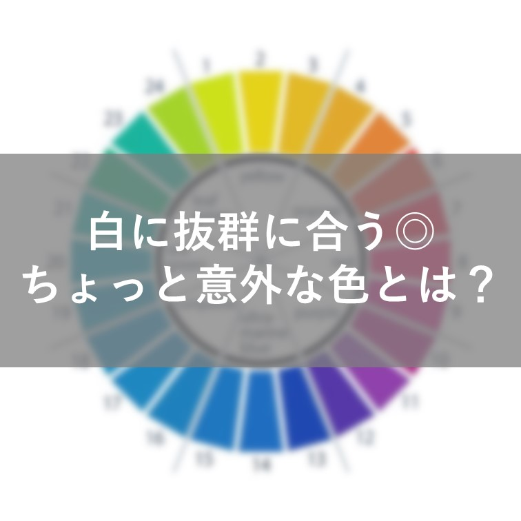
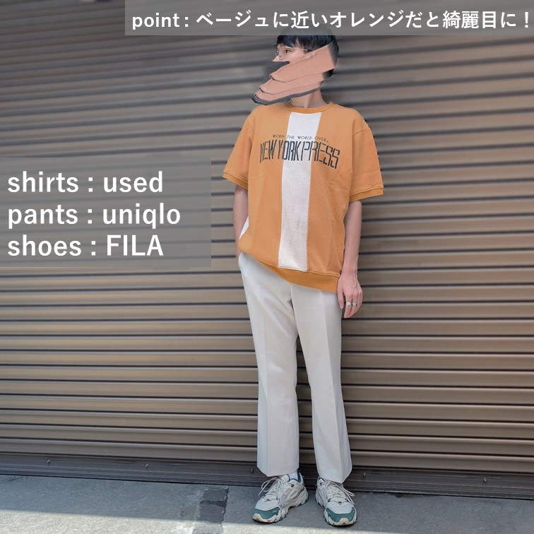
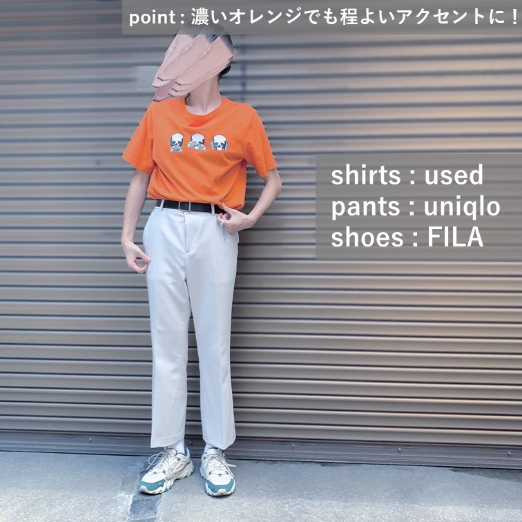
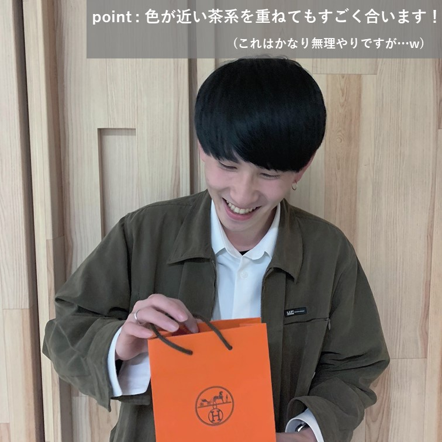

白に抜群に合うちょっと意外な色とは？

白って基本的に何色ともケンカしないんですけど、その中でも好きな組み合わせの色を紹介します！
そうなんです。
白✖オレンジって最強なんです(笑)
白と合わせる色物のなかでは一番合う説を立証していきます^_^

ベージュに近いオレンジと合わせてあげると綺麗めな印象に！
色相環をみても近くにあるのでそりゃあうわ！っていう話。
(色相環は美術で習ったような、色が円状に並んでいるやつです)
ちなみにこの古着はオトンからのおさがりです(笑)

鮮やかなオレンジと合わせてももちろん合う！
カジュアルさとキレイさのバランスを意識することで固くなりすぎず、変になりすぎず、、

これは本当に無理矢理感がすごいです(笑)
白の服を着ている人がエルメスのオレンジを借りているだけ(笑)
ただ、これも色相環から分かることなんですけど、オレンジと茶色の関係もめちゃくちゃいいんです！
そこに白を足してあげると重くなりすぎずにスッキリとした印象に！